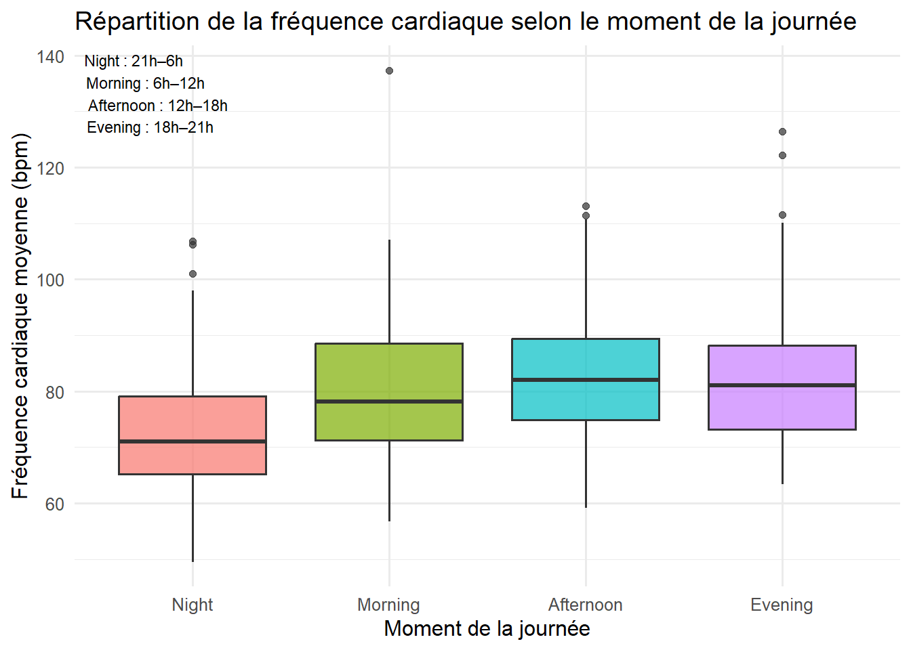
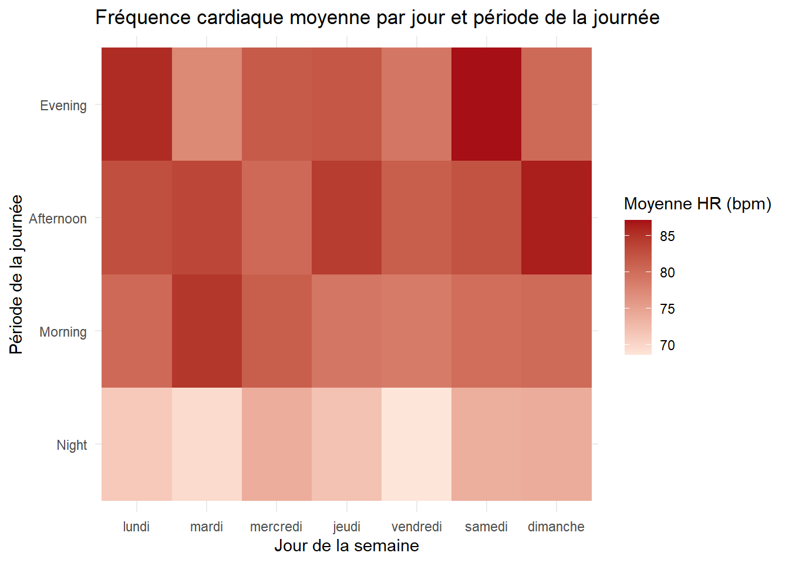

Bellabeat- Rythme cardiaque quotidien
1 Courbes : Fréquence cardiaque moyenne

Variabilité hebdomadaire de la fréquence cardiaque
La fréquence cardiaque suit un rythme circadien constant : minimale la nuit, en hausse le matin, maximale l’après-midi puis en baisse le soir. Les différences entre les jours de la semaine sont moins marquées que les différences entre les périodes de la journée. Un léger effet week-end, surtout dans deux périodes dimanche matin et le samedi soir présente un niveau cardiaque un peu plus élevé que les autres soirées.
L’après-midi reste la période la plus active avec une fréquence élevée et régulière sur toute la semaine.
Globalement, les données révèlent des comportements stables, un cycle biologique clair et une faible variabilité hebdomadaire, hormis de modestes écarts en fin de semaine.
2 Box-and-whisker plot

Différences entre les périodes de la journée.
| Période | Niveau cardiaque |
|---|---|
| Night | le plus bas (70–75 bpm) |
| Morning | en hausse (75–85 bpm) |
| Afternoon | le plus élevé (85–90+ bpm) |
| Evening | légère baisse (75–85 bpm) |
3 Heatmap de la fréquence cardiaque moyenne par jour de la semaine et période de la journée

La fréquence cardiaque est systématiquement plus élevée en journée — surtout l’après-midi et le soir — et atteint ses niveaux les plus bas la nuit,
4 Rythme cardiaque quotidien moyen par jour de la semaine

La fréquence cardiaque suit le même rythme pour tous les jours, avec une montée nette du matin jusqu’à l’après-midi puis un léger repli le soir.